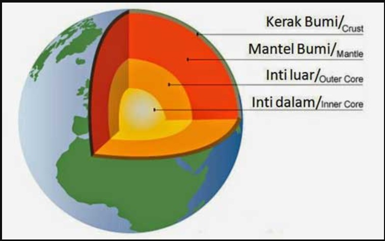

Gempa
Gempa bumi adalah peristiwa alam berupa getaran atau guncangan yang terjadi di permukaan tanah akibat pelepasan energi secara tiba-tiba di bawah litosfer sehingga menimbulkan gelombang seismik. Titik awal gempa disebut hiposenter , sedangkan permukaan tanah yang berada tepat di atasnya disebut episentrum. Gempa bumi dapat disebabkan oleh kesalahan geologis, atau oleh aktivitas gunung berapi, tanah longsor, dan peristiwa lainnya. Gempa bumi menimbulkan berbagai dampak, seperti guncangan tanah dan pencairan tanah, yang mengakibatkan kerusakan besar dan korban jiwa. Jika episentrum gempa besar terletak di lepas pantai, dasar laut mungkin akan mengalami pergeseran yang cukup besar sehingga menyebabkan tsunami. Gempa bumi juga dapat memicu tanah longsor. Gempa bumi dipengaruhi oleh pergerakan lempeng tektonik di sepanjang sesar aktif, termasuk sesar normal, sesar terbalik (dorong), dan sesar mendatar, dengan dinamika pelepasan energi dan patahan yang diatur oleh teori pantulan elastis.
Gelombang Seismik
Gelombang seismik adalah gelombang mekanis energi akustik yang bergerak melalui Bumi atau benda angkasa lain . Gelombang ini dapat disebabkan oleh gempa bumi (atau secara umum, gempa bumi ), letusan gunung berapi , pergerakan magma , tanah longsor besar , dan ledakan besar buatan manusia yang menghasilkan energi akustik frekuensi rendah. Gelombang seismik dipelajari oleh seismolog , yang merekam gelombang menggunakan seismometer , hidrofon (di dalam air), atau akselerometer . Terdapat 2 jenis gelombang ,yaitu gelombang P (Primer) yang merambat dengan cepat, dan bisa merambat melalui padatan dan cairan. Sedangkan gelombang S (Sekunder) bersifat lebih lambat, dan hanya merambat melalui padatan. Gelombang seismik dibedakan dari kebisingan seismik (getaran sekitar), yang merupakan getaran amplitudo rendah yang terus-menerus yang timbul dari berbagai sumber alami dan antropogenik. Kecepatan perambatan gelombang seismik bergantung pada kepadatan dan elastisitas medium serta jenis gelombang. Kecepatan cenderung meningkat seiring dengan kedalaman melalui kerak dan mantel Bumi , tetapi menurun tajam dari mantel ke inti luar Bumi Dalam geofisika, refraksi atau refleksi gelombang seismik digunakan untuk meneliti struktur internal Bumi.
Struktur Bumi
Kerak Bumi
Kerak Bumi adalah lapisan terluar bumi yang terbagi menjadi dua kategori, yaitu kerak samudera dan kerak benua. Kerak samudra mempunyai ketebalan sekitar 5–10 km sedangkan kerak benua mempunyai ketebalan sekitar 20–70 km. Penyusun kerak samudra yang utama adalah batuan basal, sedangkan batuan penyusun kerak benua yang utama adalah granit, yang tidak sepadat batuan basal.
Mantel Bumi
Mantel bumi merupakan lapisan yang menyelubungi inti bumi dan merupakan bagian terbesar dari bagian bumi sekitar 83,2 persen dari volume dan 67,8 persen dari keseluruhan masa bumi.
Inti Bumi
Inti bumi terletak pada kedalaman sekitar 2900 km dari dasar kerak bumi sampai ke pusat bumi. Inti bumi dapat dipisahkan menjadi inti bumi bagian luar dan inti bumi bagian dalam. Inti bagian luar merupakan struktur cair yang terdiri dari besi dan nikel. Inti bagian luar ini berada di kedalaman 2.885-5.144 kilometer. Suhu pada lapisan ini mencapai 3.700 derajat Celcius. Sedangkan inti bagian dalam bumi berbentuk bola metal yang memiliki radius 1.220 kilometer atau sekitar tiga per empat ukuran bulan. Inti bagian dalam terletak di dalam bumi pada kedalaman 2.885-5.144 kilometer di bawah permukaan bumi. Suhu di inti bagian dalam bumi berkisar 4.300-5.400 derajat Celcius. Suhu ini hampir sepanas suhu permukaan matahari.